高位之惑：涨多了是不是就结束了？
每次来聊，市场都在一个比较难讲的位置——要么涨到高位，要么正在调整。这次也不例外：光模块指数年内翻倍，板块平均涨幅已经翻倍，最近一段从3月底底部起来平均涨了50%-60%。
市场关心两个问题：
- 问题一：AI/科技涨这么多，是不是见顶了？
- 问题二：这个时间点太敏感——元首会晤、联储新主席上任、中东地缘、通胀数据全挤在一起。
核心立场：不能因为涨得多就判断结束。短期调一调可以理解，但不是历史大顶，也不必自己吓自己。
情绪：不算过热，仅在50-60度
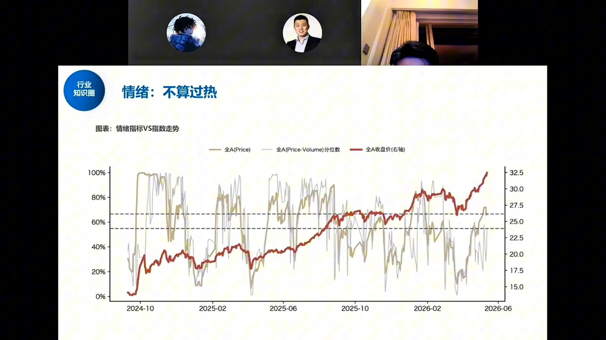
小邓老师自制的情绪指标（黄线）与全A指数（红线）叠加。黄线越高代表情绪越亢奋，越低则情绪低落，可做反向操作。
- 当前情绪温度大约在 50-60，跌完之后估计更低，处于中间水平。
- 真正的大顶，情绪无一例外要冲到 90度以上——参考2026年1月那波、2025年9月（924）那波，都在90以上。
- 2026年3月底4月初的底部，情绪指标也确实跌到了低位，与指数低点吻合。
大顶的必要条件是情绪冲到极高位置。现在情绪只是温吞水，不具备见大顶的情绪特征。
估值：ERP接近2倍标准差，与2021/2017顶部相当
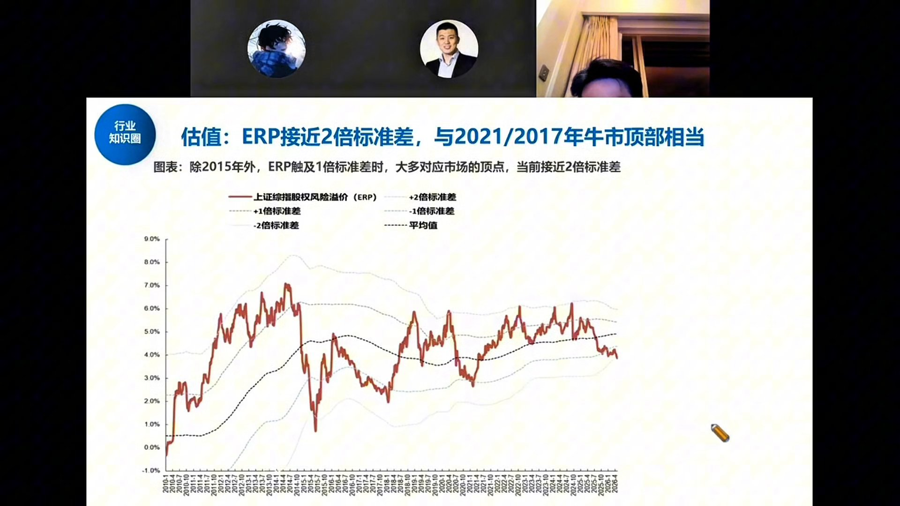
这是一张需要"看反"的图：红线是股权风险溢价（ERP），红线越高代表股票相对债券越便宜、越应该买；红线越低代表股票越贵。
- 图上标注了两个历史买点：2024年924、2025年年初，都是ERP极高（股票极便宜）的位置。
- 当前位置：ERP已经从极低位置一路回落，接近2倍标准差。
- 除2015年外，ERP触及1倍标准差时大多对应市场顶点；当前位置与2021年、2017年牛市顶部水位相当。
这是中长期需要绷一根弦的问题：市场不便宜了，不能盲目大干快上。但"贵"不等于"明天就跌"，2021和2017顶部之后也磨了很久。
波动率：降波式上涨，类比去年7月
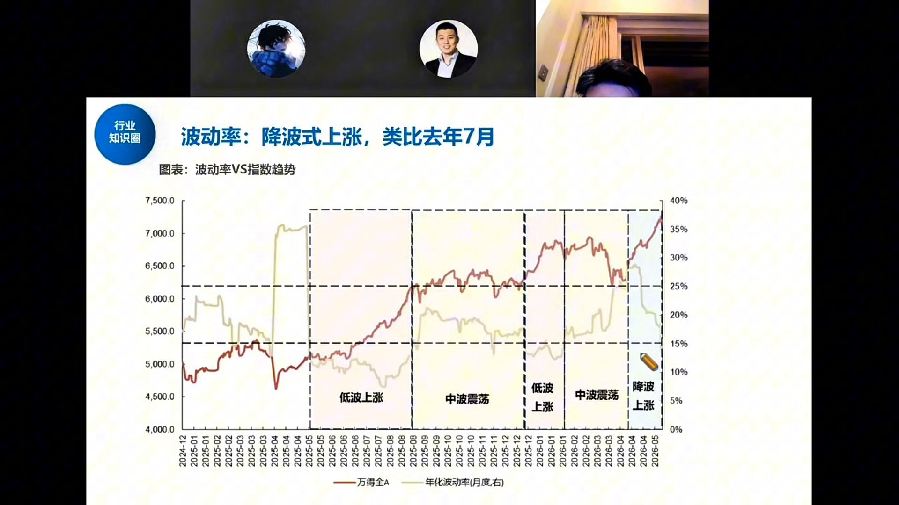
小邓老师认为这个指标"比较稳健、一直以来很重要"。波动率就是收益率的标准差，通俗讲就是"涨得稳不稳"。
真正的顶部长什么样？
- 情绪极度亢奋，所有人都看好，没有增量资金接力。
- 越涨越快：昨天1个点、今天2个点、后天3个点，斜率越来越陡。
- 急剧放量，波动率急速拉升（"放波"）。
现在是什么状态？
- 指数在涨，但年化波动率（黄线）反而在往下走。
- 这对应2025年6月底开始突破后那波"低波上涨→中波震荡→低波上涨→降波上涨"的节奏。
- 类比去年7月：指数稳健上行、波动率持续走低，不是冲顶形态。
任何一轮牛市底部都是"暴涨+斜率陡+波动率急拉"。现在三者都不具备，所以不是历史大顶的形态。
微观流动性：杠杆资金进场，ETF大额赎回
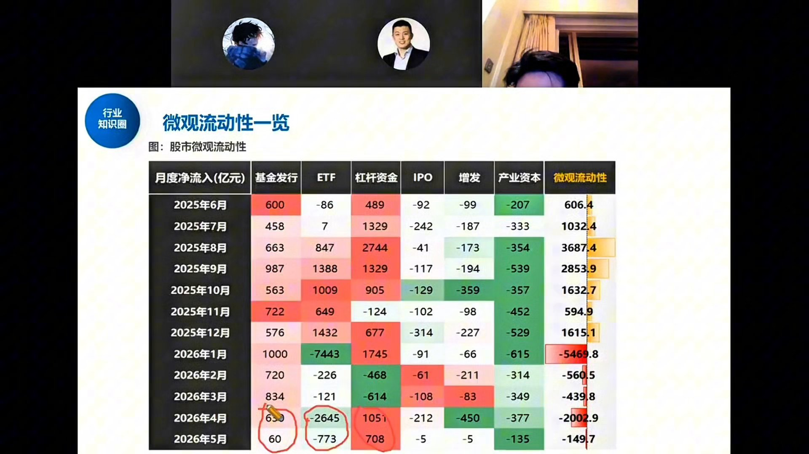
4月反弹以来，微观流动性有好有坏：
好的一面
- 两融（杠杆资金）：4月以来进场最快，融资盘上得非常猛。
- 公募新发：情况还可以，且短期赎回压力在变小。去年是"边涨边赎"，今年有净申购、新发在增加、赎回量在减少。
- 日均成交维持在3.5万亿量级，量能仍然非常夸张。
差的一面
- ETF赎回：4月单月赎了2000多亿。虽然比1月（7000多亿，极端情况）少，但去年上涨阶段ETF是净流入的，今年变成了净流出。
- ETF持有人以保险、银行理财、大户等机构资金为主，散户主要买个股。
流动性是滞后指标，没法预测明天谁来买。但当前结构：杠杆+公募在进，机构通过ETF在撤，整体"还凑合"。
事件窗口：元首会晤、联储新主席、中东地缘
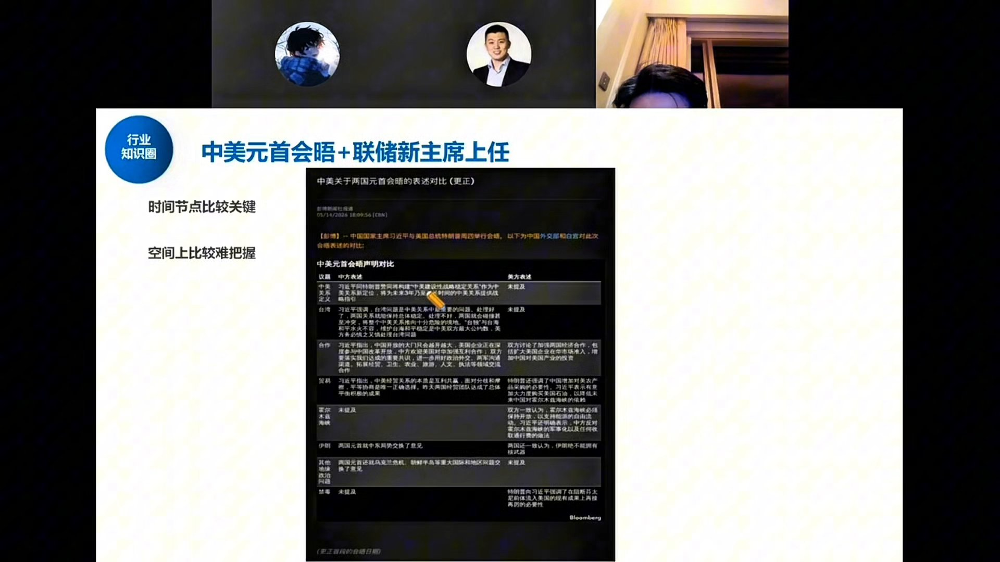
这个时间点敏感，不是因为指数位置本身，而是大事件全挤在一起：
- 中美元首会晤：结果偏积极，包括芯片采购传闻、意见交换等。时间节点关键，空间上不好把握。
- 美联储新主席上任：市场原本预期今年降息，因中东问题后年内降息次数归零，甚至开始pricing加息。10年期美债收益率已到4.5%以上，远期期货接近5%。
- 霍尔木兹海峡仍封锁：全球原油库存到5月下旬/6月初可能告急，油价若跳涨将重新点燃通胀交易。
事件交易的规律：很多资金不需要知道结果，到了时点就会兑现。这两天的调整不是会晤结果不好，而是资金在事件窗口主动降仓。新主席一上来就鹰派加息？逻辑上讲不通——这相当于提自己人上来跟领导对着干。
盈利周期：TTM净利润增速由负转正
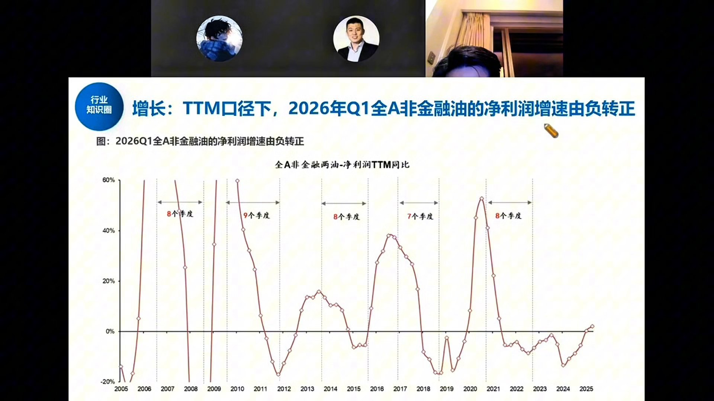
这张图是小邓老师认为"对下半年非常重要"的核心图——上市公司EPS利润的长周期图，周期性极强。
- 历史规律：上行约8个季度（2年），下行约8个季度（2年），一轮周期约4年。
- 最近一轮：2016-17上行→2018-19下行→2020-21上行→2022-23下行→2024年因地产问题多砸了一个季度。
- 从2024年底/2025年中开始，盈利周期重新往上走——本轮牛市也正是从这个时点启动。
- 2026年Q1：全A非金融两油的TTM净利润增速正式由负转正。
A股非常基本面：企业盈利怎么走，很大程度上直接决定牛熊。现在盈利周期处于上行段，一季报数据"非常好，比预期还好"。
一季报全景：非金融油净利润+12.5%
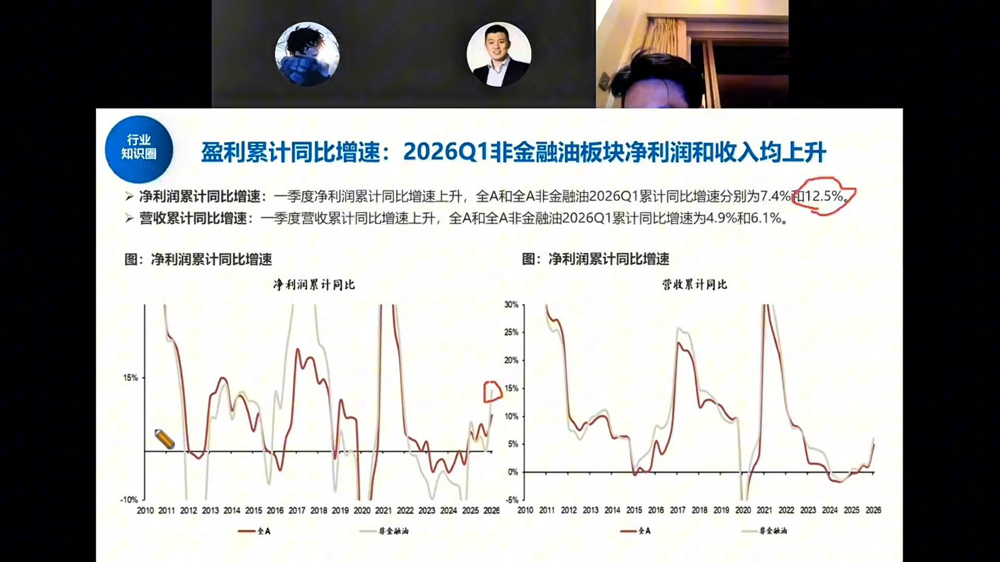
今年一季报是近几年关注度最低的一次——因为市场涨得好、AI故事讲得嗨，大家默认企业基本面"也就那样"。但数据恰恰相反：
- 剔除银行、券商等金融股后，2026Q1净利润增速约 12.5%，全A口径约7.4%。
- 营收累计同比：全A 4.9%，非金融油 6.1%。
- 原本预期要到年末才能看到8-9%的利润增速，结果一个季度就干到了。
- 这个数字已接近2013年水平，虽然比不了2021、2017年的宏观大年，但"非常好"。
不要把宏观和微观完全划等号：现在上市公司结构里科技、新能源占比远高于宏观经济中的占比，所以"宏观体感一般"不等于"上市公司盈利一般"。
行业热力图：制造高增加速，TMT维持高增
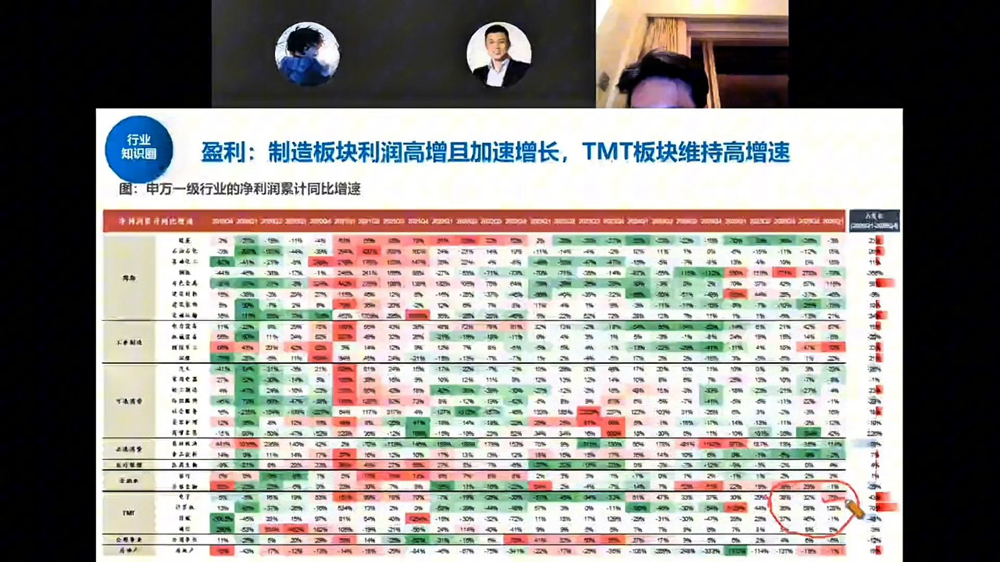
这张热力图回答了一个关键问题：是不是只有AI好？答案是否定的。
- TMT/电子：一季度60-70%增长，主要是半导体爆了——三星、海力士业绩爆表，国内电子/半导体同样高景气。
- 新能源、军工：40-50%增速，同样很好。
- 边际变化（最后一列环比）：绝大多数行业都是红色（改善），一季度比去年四季度好，去年四季度比三季度好——一个季度一个季度往上走。
- 哪怕是"狗不理"的食品饮料、白酒，一季度也在改善；零售、纺服等线下渠道类板块同样环比向上。
不是只有科技好。微观基本面数据与市场"只涨科技、其他都不行"的交易叙事存在脱钩。
资本开支与毛利率：中下游开始顺价
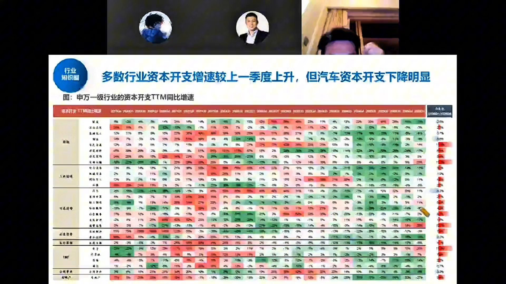
资本开支（投钱）是利润（挣钱）的先行指标。热力图显示最后一列同样以红色为主——多数行业资本开支环比在往上走，唯独汽车明显下降。
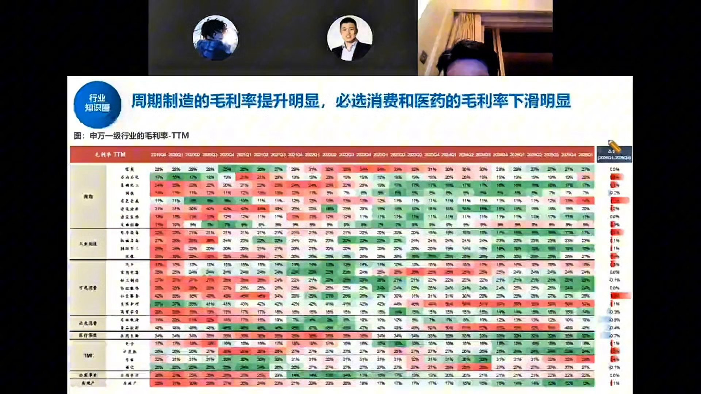
更关键的是毛利率这张图：市场原本担心油价上涨后"上游涨价、下游接不住"，但数据显示：
- 上游（油、有色、部分建材）价格确实涨了。
- 但中下游毛利率没有下滑，反而新能源、机械、军工、部分消费品种都在涨价。
- 周期制造的毛利率提升明显；必选消费和医药毛利率仍在下滑。
如果终端需求真那么差，中下游凭什么能涨价？这个"顺价"现象说明需求端没有大家体感的那么弱。
房地产：一线回暖超预期，上海连涨两个季度
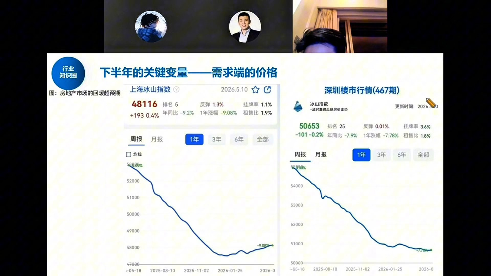
这是下半年的关键变量——需求端的价格。
- 上海冰山指数：从2025年底开始连续两个季度量价齐升，最新48116，年同比-9.2%但环比持续修复。
- 深圳：稍微弱一点但稳住了，50653，年同比-7.9%。
- 北京与深圳差不多。
- 从2021年开始跌了五年（今年第五年），总归会跌无可跌，回到内在价值。
现在已经不是"小阳春"了（三四月份早就过了），现在依然还可以。等七八月份中报出来，大家会发现传统内需类并不是不能看——去年下半年消费低基数，今年可以关注。
AI叙事：token消耗超预期，国产军备竞赛
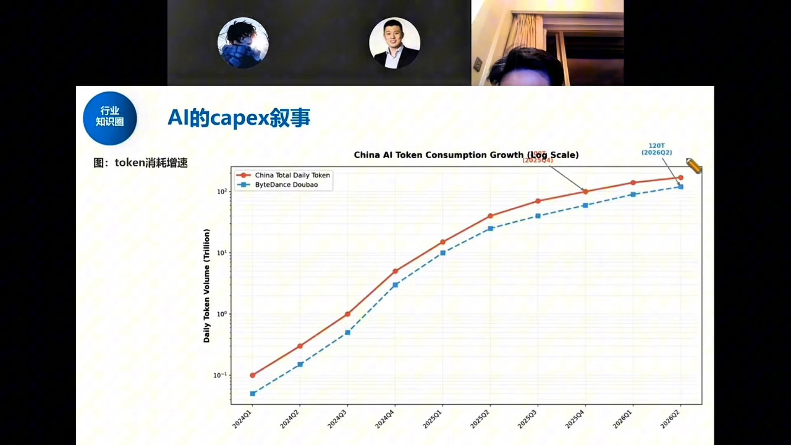
今年支撑国内AI行情的新叙事是：token消耗量远超预期。
- 老百姓在用豆包、腾讯元宝、Kimi、通义千问；机构和各行各业也在用，只是比美国滞后一点。
- 图中红色曲线（中国每日总token）和蓝色曲线（字节豆包）呈对数级增长，到2026Q2已达120T/日量级。
- 这让国内大厂从"不愿投"变成"不得不投"——字节最先上调capex指引，腾讯、阿里跟进。
这个叙事短期很难证伪：字节说要投2000亿，你得等它年底真投完才能判断是否低预期。在此之前只能高频跟踪新增指引。
国内AI capex上修：字节2000亿，九大云厂8300亿美元
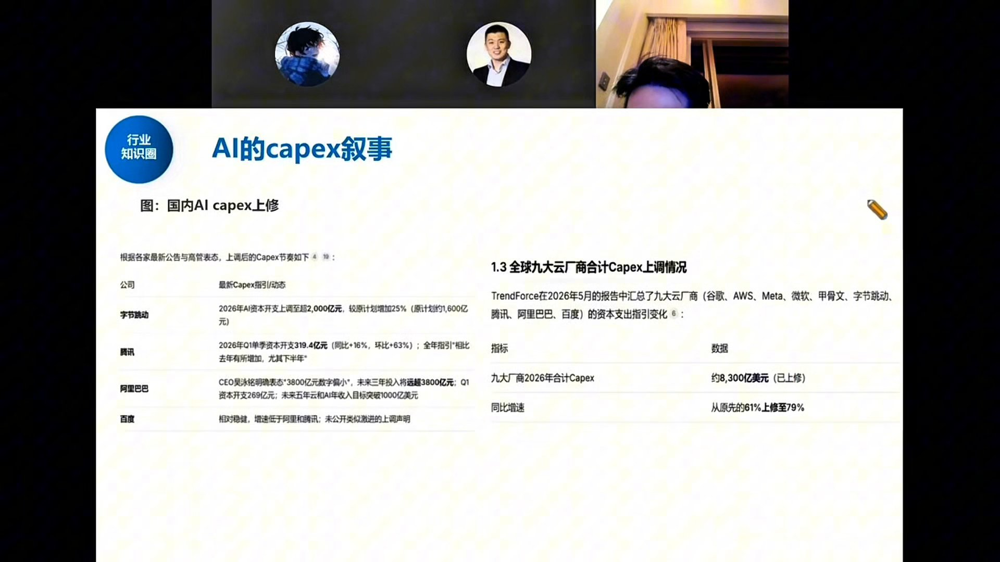
根据各家最新公告与高管表态，上调后的capex节奏：
- 字节跳动：2026年AI资本开支上调至超2000亿元，较原计划增加25%（原计划约1600亿）。
- 腾讯：2026Q1单季资本开支319.4亿元（同比+16%，环比+63%），全年指引相比去年继续增加，尤其下半年。
- 阿里巴巴：CEO吴泳铭明确表态"3800亿元数字偏小"，未来三年投入将远超3800亿元；Q1资本开支269亿；未来五年云和AI年收入目标突破1000亿美元。
- 百度：相对稳健，增速低于阿里腾讯，未公开类似激进的上调声明。
TrendForce 2026年5月报告汇总：谷歌、AWS、Meta、微软、甲骨文、字节、腾讯、阿里、百度九大云厂商2026年合计capex约 8300亿美元，同比增速从原先的61%上修至 79%。
年初时市场还担心"AI泡沫、投不起了"，现在反过来：海外比预期好，国内接棒也比预期好得多。这是年内最大的叙事反转。
下半年展望：指数上行风险打开，4000点不是高点
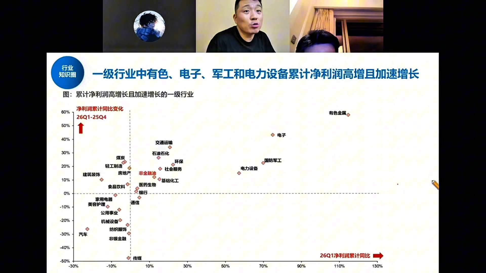
这张散点图横轴是26Q1净利润累计同比，纵轴是26Q1相对25Q4的边际变化。右上角=高增+加速：
- 有色金属：约120%增速，且在加速。
- 电子：约75%增速，加速。
- 国防军工：约70%增速，加速。
- 电力设备：约60%增速，加速。
- 非金融油整体位于10%增速、边际改善区域。
三个核心结论
- 短期：不是大顶。情绪不高、波动率下降、结构分化，回调是正常的，但不是历史顶部形态。
- 中期：基本面比预期好得多——一季报12.5%、AI capex翻倍、地产一线回暖、中下游顺价。如果AI趋势继续强，估值可以再抬升一把，指数空间打开，4000点不是高点。
- 结构：牛市里主线很少切换，"科技不行了行情就结束了"——所以不能看空科技。但其他板块在底部，下行风险有限；下半年如果做分散化，能买的东西其实挺多。
关于3800点：那是铁底。情绪释放完之后可以再回来。关于新主席加息：除非5-6月看到通胀数据显著恶化，否则更可能是"虚晃一枪"。关于美债4.5%：对人民币汇率有承压，但不是趋势性贬值，对权益资产影响不大。